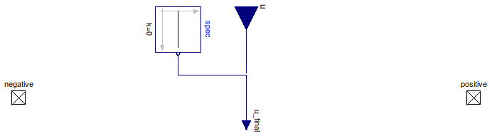

Table of Contents
- User's Guide
- BCs
- Sensors
- Assemblies
- Regions
- Subregions
- Connectors
- Characteristics
- Units
- Quantities
- BaseClasses
Download
- Latest: FCSys-2.0.zip (**Please check back soon or contact kdavies4 at gmail.com.)

| Name | Description |
|---|---|
| Partial model for a BC for heat | |
| BCType | Types of BCs |
type BCType = enumeration(
Temperature "Temperature difference",
HeatRate "Heat flow rate") "Types of BCs";

| Type | Name | Default | Description |
|---|---|---|---|
| Boolean | internal | true | Use internal specification |
| Constant | spec | redeclare Modelica.Blocks.So... | Internal specification |
| BCType | bCType | Type of BC |
| Type | Name | Description |
|---|---|---|
| input RealInput | u | Value of BC |
| Thermal | negative | Heat connector for the negative face |
| Thermal | positive | Heat connector for the positive face |
partial model PartialBC "Partial model for a BC for heat" extends FaceDifferential.BaseClasses.PartialBC; constant BCType bCType "Type of BC"; // Note: This is included so that the type of BC is recorded with the // results.FCSys.Connectors.Thermal negative "Heat connector for the negative face"; FCSys.Connectors.Thermal positive "Heat connector for the positive face"; equation 0 = negative.Qdot + positive.Qdot "Energy conservation (no storage)";end PartialBC;